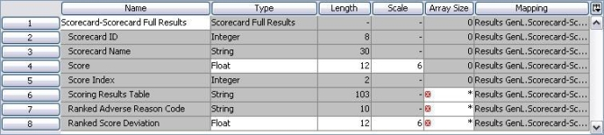
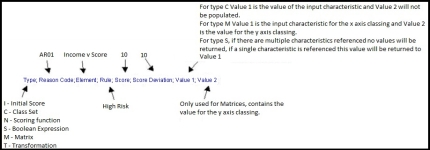
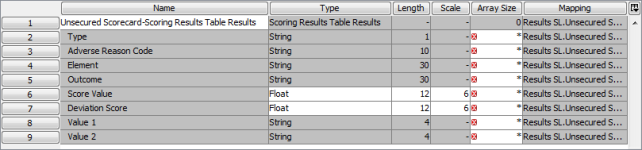

Setting the results model properties
To ensure that the correct results will be returned when the scorecard process is executed, when a full scorecard results logical data model is added, the system will indicate in the Mapped Characteristics area of the Define Results Mapping dialog those characteristics for which properties need to be defined.
Full Scorecard Result Logical Data Model
For the full scorecard results logical data model, the Score, Scoring Results Table, Ranked Adverse Reason Code and Ranked Score Deviation properties will need confirming: 
{kind=link}
Score - The user can choose Float, Decimal or Integer type for a Score.
To handle the maximum length that can be input or calculated for a score it is recommended that the Decimal type is selected with a length of 17. The actual length and decimal place selected will be dependent on the requirements of the scorecard being processed.
Scoring Results Table - The user must define the size of the array. The recommended number is 2 plus the number of rules contained in the scorecard being processed, since the Scorecard Results Table contains a header and a footer field that hold the results from the Initial score and the Transformed score. 
The following illustrates the format of the Scoring Results Table:
{kind=link}
Ranked Adverse Reason Code - The user must define the size of this array. The recommended number is the number of rules contained in the scorecard being processed.
Ranked Score Deviation - The user can choose Float, Decimal or Integer type for the Ranked Score Deviation.
To handle the maximum length that can be input or calculated for a score it is recommended that the Decimal type is selected with a length of 17. The actual length and decimal place selected will be dependent on the requirements of the scorecard being processed and should match those set for the Score. The user must also define the size of the array. The recommended number is the number of rules contained in the scorecard being processed.
To set the results properties for the full scorecard results logical data model
- With the Define Results Mapping dialog open.
- In the Mapped Characteristics area, for the Score characteristic, in the "Type" column select Decimal from the drop down list.
- In the "Length" column type the length you require.
- In the "Scale" column type the number of decimal places you require.
- For the Scoring Results Table characteristic, in the "Array Size" column, type the number you require.
- For the Ranked Adverse Reason Code characteristic, in the "Array Size" column, type the number you require.
- For the Ranked Score Deviation characteristic, in the "Type" column select Decimal from the drop down list, in the "Length" column type the length you require, in the "Scale" column type the number of decimal places you require and in the "Array Size" column type the number you require.
- Click on the Save button.
- Click on the Close button.
| Even when you have chosen to switch off the Adverse Reason Code processing you will still need to define a length for the array. It is recommended that you type 1 to reduce the size of this field to a minimum. |
The Define Results Mapping dialog will close and the properties will be updated.
To ensure that the correct results will be returned when the scorecard process is executed, when a minimum scorecard results logical data model is added, the system will indicate in the Mapped Characteristics area of the Define Results Mapping dialog those characteristics for which properties need to be defined.
Minimum Scorecard Results Logical Data Model
For the minimum scorecard results logical data model, only the Score properties will need confirming:
{kind=link}
Score Properties - The user can choose, Float, Decimal or Integer type for a Score.
To handle the maximum length that can be input or calculated for a score it is recommended that the Decimal type is selected with a length of 17. The actual length and decimal place selected will be dependent on the requirements of the scorecard being processed.
To set the results properties for the minimum scorecard results logical data model
- With the Define Results Mapping dialog open.
- In the Mapped Characteristics area, for the score characteristic in the "Type" column select Decimal from the drop down list.
- In the "Length" column type the length you require.
- In the "Scale" column type the number of decimal places you require.
- Click on the Save button.
- Click on the Close button.
The Define Results Mapping dialog will close and the properties will be updated.
In addition to mapping either the minimum, typical or full scorecard results the user can also map either the whole Scoring Results Table Results block or individual elements from this block to characteristics in the logical data source enabling additional information to be returned when the scorecard process is executed.
Scoring Results Table Results Logical Data Model
For the full scoring results table results logical data model, the Type, Adverse Reason Code, Element, Outcome, Score Value Deviation Score, Value 1 and Value 2 will need confirming: 
{kind=link}
Type - the type of scoring element that has been processed, e.g. Initial Score (I), Class Set (C), Scoring function (N), boolean expression (S), matrix (M), transformation function (T) will be returned to this field. The user needs to set the array size. The recommended number is the number of rules contained in the scorecard being processed.
Adverse Reason Code - the adverse reason code is returned to this field. The user needs to define the size of this array. The recommended number is the number of rules contained in the scorecard being processed.
Element - the name of the scoring element that has been processed. The user needs to define the size of this array. The recommended number is the number of rules contained in the scorecard being processed.
Outcome - the outcome or interval that is processed for a particular record. For example the scoring element type could be a class set called Gross Annual Income and the interval that is used for a particular record could >=25,000<=34,999, >=25,000<=34,999 would be returned as the outcome. The user needs to define the size of this array. The recommended number is the number of rules contained in the scorecard being processed.
Score Value - the score value that is returned for the specific outcome.The user can choose Float, Decimal or Integer type for the Score Value.
To handle the maximum length that can be input or calculated for a score it is recommended that the Decimal type is selected with a length of 17. The actual length and decimal place selected will be dependent on the requirements of the scorecard being processed.
Deviation Score - the value returned is the deviation of the actual score from the expected score. The user can choose Float, Decimal or Integer type for the Score Value.
To handle the maximum length that can be input or calculated for a score it is recommended that the Decimal type is selected with a length of 17. The actual length and decimal place selected will be dependent on the requirements of the scorecard being processed.
Value 1 and Value 2 - for type C (class set) value 1 is the value of the input characteristic and value 2 will not be populated. For type M (matrix) value 1 is the input characteristic for the x axis and value 2 is the value for the y axis classing. For type S (boolean expression), if there are multiple characteristics referenced no values will be returned, if a single characteristic is referenced this value will be returned to value 1
To set the results properties for the scoring results table logical data model
- With the Define Results Mapping dialog open.
- In the Mapped Characteristics area, for the Type characteristic, in the "Array Size" column, type the number you require.
- For the Adverse Reason Code characteristic, in the "Array Size" column, type the number you require.
- For the Element characteristic, in the "Array Size" column type the number you require.
- For the Outcome characteristic, in the "Array Size" column type the number you require.
- For the Score Value characteristic, in "Type" column type.
- For the Score characteristic, in the "Type" column select Decimal from the drop down list, in the "Length" column type the length you require and in the "Scale" column type the number of decimal places you require.
- For the Deviation Score characteristic, in the "Type" column select Decimal from the drop down list, in the "Length" column type the length you require and in the "Scale" column type the number of decimal places you require.
- For the Value 1 characteristic, in the "Array Size" column type the number you require.
- For the Value 2 characteristic, in the "Array Size" column type the number you require.
- Click on the Save button.
- Click on the Close button.
| Even when you have chosen to switch off the Adverse Reason Code processing you will still need to define a length for the array. It is recommended that you type 1 to reduce the size of this field to a minimum. |
The Define Results Mapping dialog will close and the properties will be updated.
To ensure that the correct results will be returned when the decision setter process is executed, when a typical decision results logical data model is added, (that is for a results model that contains an array or when the user needs to be able to amend length/type/scale), the system will indicate in the Mapped Characteristics area of the Define Results Mapping dialog those characteristics for which properties need to be defined.
Typical Decision Setter Results Logical Data Model
For the typical decision setter results logical data model, the Sorted Reason Code Table and the Sorted Decision Table properties will need confirming:
{kind=link}
Sorted Reason Code Table - The user must define the size of this array. The size is dependent on the number of reason codes that need to be returned.
Sorted Decision Table - The user must define the size of this array. The size is dependent on the number of reason codes that need to be returned.
To set the results properties for the typical decision setter results logical data model
- With the Define Results Mapping dialog open.
- In the Mapped Characteristics area, for the Sorted Reason Code Table characteristic, in the "Array Size" column, type the number you require.
- For the Sorted Decision Table characteristic, in the "Array Size" column, type the number you require.
- Click on the Save button.
- Click on the Close button.
The Define Results Mapping dialog will close and the properties will be updated.
To ensure that the correct results will be returned when the scorecard process is executed, when a typical scorecard results logical data model is added, the system will indicate in the Mapped Characteristics area of the Define Results Mapping dialog those characteristics for which properties need to be defined.
Typical Scorecard Result Logical Data Model
For the typical scorecard results logical data model, the Score, Scoring Results and Ranked Adverse Reason Code properties will need confirming:
{kind=link}
Score - The user can choose Float, Decimal or Integer type for a Score.
To handle the maximum length that can be input or calculated for a score it is recommended that the Decimal type is selected with a length of 17. The actual length and decimal place selected will be dependent on the requirements of the scorecard being processed.
Score Results Table - The user must define the size of the array. The recommended number is 2 plus the number of rules contained in the scorecard being processed, since the Scorecard Results Table contains a header and a footer field that hold the results from the Initial score and the Transformed score.
The following illustrates the format of the Score Results Table.
Ranked Adverse Reason Code - The user must define the size of this array. The recommended number is the number of rules contained in the scorecard being processed.
To set the results properties for the typical scorecard results logical data model
- With the Define Results Mapping dialog open.
- In the Mapped Characteristics area, for the Score characteristic, in the "Type" column select Decimal from the drop down list.
- In the "Length" column type the length you require.
- In the "Scale" column type the number of decimal places you require.
- For the Scoring Results Table characteristic, in the "Array Size" column, type the number you require.
- For the Ranked Adverse Reason Code characteristic, in the "Array Size" column, type the number you require.
- Click on the Save button.
- Click on the Close button.
| Even when you have chosen to switch off the Adverse Reason Code processing you will still need to define a length for the array. It is recommended that you type 1 to reduce the size of this field to a minimum. |
The Define Results Mapping dialog will close and the properties will be updated.